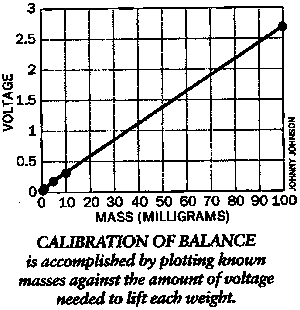

Homemade Microgram Electrobalanceby Shawn Carlson, Scientific American, June 1996Microgram balances are clever devices that can measure fantastically tiny masses. Top-of-the-line models employ an ingenious combination of mechanical isolation, thermal insulation and electronic wizardry to produce repeatable measurements down to one tenth of a millionth of one gram. With their elaborate glass enclosures and polished goldplated fixtures, these balances look more like works of art than scientific instruments. New models can cost more than $10,000 and often require a master's touch to coax reliable data from background noise. But for all their cost and outward complexity, these devices are in essence quite simple. One common type uses a magnetic coil to provide a torque that delicately balances a specimen at the end of a lever arm. Increasing the electric current in the coil increases the torque. The current required to offset the weight of the specimen is therefore a direct measure of its mass. The coils in commercial balances ride on pivots of polished blue sapphire. Sapphires are used because their extreme hardness (only diamonds are harder) keeps the pivots from wearing. Sophisticated sensing devices and circuitry control the current in the coil - which is why microgram electrobalances are so pricey. And that is good news for amateurs. If you are willing to substitute your eyes for the sensors and your hands for the control circuits, you can build a delicate electrobalance for less than $30. George Schmermund of Vista, Calif., made this fact clear to me. For more than 20 years, Schmermund has run a small company called Science Resources, which buys, repairs and customizes scientific equipment. Although he may be an austere professional to his clients, I know him to be quite the free spirit who spends time in the business world only so he can make enough money to indulge his true passion - amateur science. Schmermund already owns four expensive commercial microgram balances. But in the interest of advancing amateur science, he decided to see how well he could do on the cheap. His ingenious ploy was to combine a cheese board and an old galvanometer, a device that measures current. The result was an electrobalance that can determine weights from about 10 micrograms all the way up to 500,000 micrograms (0.5 gram). The precision of the measurements is quite impressive. I personally confirmed that his design can measure to 1 percent masses exceeding one milligram. Furthermore, it can distinguish between masses in the 100-microgram range that differ by as little as two micrograms. And calculations suggest that the instrument can measure single masses as slight as 10 micrograms (I didn't have a weight this small to test). The crucial component, the galvanometer, is easy to come by. These devices are the centerpiece of most old analog electric meters, the kind that use a needle mounted on a coil. Current flowing through the coil creates a magnetic field that deflects the needle. Schmermund's design calls for the needle, mounted in the vertical plane, to act as the lever arm: specimens hang from the needle's tip. Electronic surplus stores will probably have several analog galvanometers on hand. A good way to judge the quality is to shake the meter gently from side to side. If the needle stays in place, you're holding a suitable coil. Beyond this test, a strange sense of aesthetics guides me in selecting a good meter. It is frustratingly difficult to describe this sense, but if I'm moved to say, "Now this is a beautiful meter!" when I look it over, I buy it. There is a practical benefit to this aesthetic fuzziness. Finely crafted and carefully designed meters usually house exquisite coils that are every bit as good as the coils used in fine electrobalances, sapphire bearings and all. To build the balance, gently liberate the coil from the meter housing, being careful not to damage the needle. Mount the coil on a scrap sheet of aluminum [see illustration on opposite page]. If you can't use aluminum sheet metal, mount the coil inside a plastic project box. To isolate the balance from air currents, secure the entire assembly in a glass-covered cheese board, with the aluminum sheet standing upright so that the needle moves up and down. The two heavy guard wires cannibalized from the meter are mounted on the aluminum support to constrain the needle's range of motion. Epoxy a small bolt to the aluminum support, just behind the needle's tip. The needle should cross just in front of the bolt without touching. Cover the bolt with a small piece of construction paper, then draw a thin horizontal line across the center of the paper. This line defines the zero position of the scale. The specimen tray that hangs from the needle is merely a small frame homefashioned by bending noninsulated wire. The exact diameter of the wire is not critical, but keep it thin: 28-gauge wire works well. A tiny circle of aluminum foil rests at the base of the wire frame and serves as the tray pan. To avoid contamination with body oils, never touch the tray (or the specimen) with your fingers; rather always use a pair of tweezers. To energize the galvanometer coil, you'll need a circuit that supplies a stable five volts [see the circuit diagram below]. Do not substitute an AC-to-DC adapter for the batteries unless you are willing to add filters that can suppress lowfrequency voltage fluctuations, which can leak into the system from the adapter. Fluctuations as tiny as 0.1 millivolt will sharply reduce your ability to resolve the smallest weights. The device uses two precision, 100kilohm, 10-turn, variable resistors (also called potentiometers or rheostats) - the first to adjust the voltage across the coil and the second to provide a zero reference. A 20-microfarad capacitor buffers the coil against any jerkiness in the resistors' response and helps in making any delicate adjustments to the needle's position. To measure the voltage across the coil, you'll need a digital voltmeter that reads down to 0.1 millivolt. Radio Shack sells handheld versions for less than $80. Using a five-volt power supply, Schmermund's scale can lift 150 milligrams. For larger weights, replace the type 7805 voltage-regulator chip with a 7812 chip. It will produce a stable 12 volts and will lift objects weighing nearly half a gram. To calibrate the scale, you'll need a set of known microgram weights. A single high-precision calibrated weight between one and 100 micrograms typically costs $75, and you'll need at least two. There is, however, a cheaper way. The Society for Amateur Scientists is making available for $10 sets of two calibrated microgram weights suitable for this project. Note that these two weights enable you to calibrate your balance with four known masses: zero, weight one, weight two and the sum of the two weights. To make a measurement, begin with the scale pan empty. Cover the device with the glass enclosure. Choke down the electric current by setting the first resistor to its highest value. Next, adjust the second resistor until the voltage reads as close to zero as you can set it. Write down this voltage and don't touch this resistor again until you have finished your entire set of measurements. Now turn up the first resistor until the needle sinks down to the lower stop, then turn it back so that the needle returns to the zero mark. Note the voltage reading again. Use the average of three voltage measurements to define the zero point of the scale. Next, increase the resistance until the needle comes to rest on the lower wire support. Place a weight in the tray and reduce the resistance until the armature once more obscures the line. Record the voltage. Again, repeat the measurement three times and take the average. The difference between these two average voltages is a direct measure of the specimen's weight. Once you have measured the calibrated weights, plot the mass lifted against the voltage applied. The data should fall on a straight line. The mass corresponding to any intermediate voltage can then be read straight off the curve. Schmermund's balance is extremely linear above 10 milligrams. The slope of the calibration line decreased by only 4 percent at 500 micrograms, the smallest calibrated weight we had available. Nevertheless, I strongly suggest that you calibrate your balance every time you use it and always compare your specimens directly with your calibrated weights. An updated version of this article is Down Among the Micrograms by Shawn Carlson. |